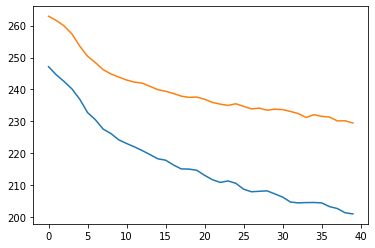

[1]:
from src import *
from tqdm import tqdm
import torch
import torch.nn as nn
from torch import optim
from scipy.signal import find_peaks
from scipy import stats
[2]:
device = torch.device("cuda:1" if torch.cuda.is_available() else "cpu")
Model Implementation PULSEGAN
[4]:
class Generator(nn.Module):
def __init__(self):
super(Generator, self).__init__()
# encoding layers
self.conv1 = nn.Conv1d(1, 16, 3, stride=1)
self.conv2 = nn.Conv1d(16, 32, 3, stride=1)
self.conv3 = nn.Conv1d(32, 64, 3, stride=1)
self.conv4 = nn.Conv1d(64, 96, 3, stride=1)
self.conv5 = nn.Conv1d(96, 128, 3, stride=1)
self.conv6 = nn.Conv1d(128, 156, 3, stride=1)
# decoding layers
self.deconv6 = nn.ConvTranspose1d(156, 128, kernel_size=3, stride=1)
self.deconv5 = nn.ConvTranspose1d(128, 96, kernel_size=3, stride=1)
self.deconv4 = nn.ConvTranspose1d(96, 64, kernel_size=3, stride=1)
self.deconv3 = nn.ConvTranspose1d(64, 32, kernel_size=3, stride=1)
self.deconv2 = nn.ConvTranspose1d(32, 16, kernel_size=3, stride=1)
self.deconv1 = nn.ConvTranspose1d(16, 1, kernel_size=3, stride=1)
# activations
self.activ1 = nn.PReLU() #not inplace, I want to copy
self.activ2 = nn.Tanh()
def forward(self, x):
# encoder
x = self.conv1(x)
res1 = self.activ1(x)
x = self.conv2(res1)
res2 = self.activ1(x)
x = self.conv3(res2)
res3 = self.activ1(x)
x = self.conv4(res3)
res4 = self.activ1(x)
x = self.conv5(res4)
res5 = self.activ1(x)
x = self.conv6(res5)
x = self.activ1(x)
# decoder
x = self.deconv6(x)
x = self.activ1(x)
x += res5
x = self.deconv5(x)
x = self.activ1(x)
x += res4
x = self.deconv4(x)
x = self.activ1(x)
x += res3
x = self.deconv3(x)
x = self.activ1(x)
x += res2
x = self.deconv2(x)
x = self.activ1(x)
x += res1
x = self.deconv1(x)
x = self.activ2(x)
return x
class Discriminator(nn.Module):
def __init__(self):
super(Discriminator, self).__init__()
# encoding layers
self.encode = nn.Sequential(
nn.Conv1d(2, 8, 3, stride=1),
nn.BatchNorm1d(8),
nn.LeakyReLU(0.1),
nn.Conv1d(8, 12, 3, stride=1),
nn.BatchNorm1d(12),
nn.LeakyReLU(0.1),
nn.Conv1d(12, 16, 3, stride=1),
nn.BatchNorm1d(16),
nn.LeakyReLU(0.1),
nn.Conv1d(16, 20, 3, stride=1),
nn.BatchNorm1d(20),
nn.LeakyReLU(0.1),
nn.Conv1d(20, 24, 3, stride=1),
nn.BatchNorm1d(24),
nn.LeakyReLU(0.1),
)
self.embed = nn.Sequential(
nn.Conv1d(24, 6, 3, stride=1),
nn.LeakyReLU(0.1),
)
self.head = nn.Sequential(
nn.Linear(696,128),
nn.ReLU(),
nn.Linear(128,24),
nn.ReLU(),
nn.Linear(24,1),
nn.Sigmoid()
)
def forward(self, X, Xc):
# concatenate both ground truth or predicted + original signal (used as conditional)
b, c, l = X.shape
Xi = torch.cat([X,Xc],axis=1)
Xi = self.encode(Xi)
Xi = self.embed(Xi)
Xi = Xi.reshape(b,-1)
proba = self.head(Xi)
return proba
class PulseGan(nn.Module):
def __init__(self):
super(PulseGan,self).__init__()
self.G = Generator()
self.D = Discriminator()
def forward(self, X, Xc):
Xrppg = self.G(X)
# Input of original rppg and Ground Truth
proba_real = self.D(X,Xc)
# Input of original rppg and generator output
proba_fake = self.D(X,Xrppg)
return X,Xc,Xrppg,proba_fake, proba_real
[5]:
class Gloss(nn.Module):
def __init__(self):
super(Gloss,self).__init__()
return
def forward(self, rppg_gt, rppg_pred, proba_pred, lbd=.1, beta=.2):
# accumulating loss for all sample
loss = 0
b, c, l = rppg_gt.shape
for i in range(b):
d = proba_pred[i]
Xc = rppg_gt[i]
Xg = rppg_pred[i]
# loss += 1/2 * (d - 1)**2
# loss += lbd * torch.sum(torch.abs(Xc-Xg))
#loss += beta * torch.sum(self.fft_loss(Xc,Xg))
loss += beta * self.peak_loss(Xc,Xg)
return loss
def fft_loss(self,Xc,Xg):
return torch.abs(torch.fft.fft(Xc) - torch.fft.fft(Xg))
def peak_loss(self,Xc,Xg):
idx_device = Xc.device.index
d = torch.device("cuda:{}".format(idx_device))
rppgC = Xc.cpu().flatten()
rppgG = Xg.cpu().flatten().detach()
peaksC, _ = find_peaks(rppgC, height=0.5) #arbitrary height simply because normalized rppg
peaksG, _ = find_peaks(rppgG, height=0.5)
dist = self.min_dist(peaksC, peaksG)
return dist
def min_dist(self,I1,I2):
# NOTE: NOT COMMUTATIVE
# I1 should be ground truth
ret = 0
if len(I2) == 0:
I2 = np.zeros_like(I1)
for val in I1:
diff = np.min(np.abs(I2-val))
ret += (diff) # penalize way more large differences
return ret
class Dloss(nn.Module):
def __init__(self):
super(Dloss,self).__init__()
return
def forward(self, proba_fake, proba_real):
# accumulating loss for all sample
b = proba_fake.shape[0]
loss = 0
for i in range(b):
df = proba_fake[i]
dr = proba_real[i]
loss += 1/2 * df ** 2 + 1/2 * (dr-1)**2
return loss
DataLoader
[6]:
# # TO AUGMENT SPECIFIC MOTION DATA
# eg = pd.read_csv('../experiments/csvs/phys_pred2.csv')
# intervals = {
# 'exp41':[700, 829],
# 'exp46':[1620, 1800],
# 'exp49':[1700, 1900]
# }
# ret = {
# 'id': [],
# 'pred': [],
# 'gt': []
# }
# for exp in intervals.keys():
# a,b = intervals[exp]
# roi = eg[eg.id==exp].reset_index(drop=True)
# roi = roi.iloc[a:b]
# preds = list(roi['pred'])
# gts = list(roi['gt'])
# for i in range(100):
# ret['id'] += [exp+'_'+str(i)] * len(roi)
# ret['pred'] += preds
# ret['gt'] += gts
# # new = pd.concat([eg,pd.DataFrame.from_dict(ret)])
# new = pd.DataFrame.from_dict(ret)
# new.to_csv('motionpulse_gan.csv',index=False)
[7]:
class PulseDataset(Dataset):
"""Dataset of rPPGs"""
def __init__(self, csv_file, D = 128):
"""
Args:
csv_file (string): Path to the csv file with rpp predictions and ground truths
"""
self.info = pd.read_csv(csv_file)
self.D = D
exps = self.info.id.unique()
self.num_samples = sum([len(self.info.loc[self.info.id == exp])//self.D for exp in exps])
# normalize values
self.info['pred'] = normalize(self.info['pred'])
self.info['gt'] = normalize(self.info['gt'])
def __len__(self):
return self.num_samples
def __getitem__(self, idx):
if torch.is_tensor(idx):
idx = idx.tolist()
et = np.array(self.info['pred'].iloc[idx*self.D:(idx+1)*self.D])
gt = np.array(self.info['gt'].iloc[idx*self.D:(idx+1)*self.D])
et = et.reshape(1,-1)
gt = gt.reshape(1,-1)
# cast to tensor
et = torch.from_numpy(et).type(torch.FloatTensor)
gt = torch.from_numpy(gt).type(torch.FloatTensor)
return et,gt
[8]:
train_dataset = PulseDataset('../experiments/csvs/phys_pred2.csv')
trainloader = torch.utils.data.DataLoader(train_dataset, batch_size=1, shuffle=True)
train, test = torch.utils.data.random_split(trainloader.dataset, [len(trainloader.dataset)//2,
len(trainloader.dataset)//2])
trainloader = torch.utils.data.DataLoader(train, batch_size=3, shuffle=False)
testloader = torch.utils.data.DataLoader(test, batch_size=3, shuffle=False)
dataloaders = {
'train': trainloader,
'test': testloader
}
Model Training
[24]:
model = PulseGan()
model = model.to(device)
# PATH = './checkpoints/PulseGan2_49.pt'
# model.load_state_dict(torch.load(PATH))
criterion_G = Gloss()
criterion_D = Dloss()
optimizer = optim.Adam(model.parameters(), lr=0.0001)
val_loss_history = []
train_loss_history = []
num_epochs = 50
for epoch in tqdm(range(num_epochs)):
print('Epoch {}/{}'.format(epoch, num_epochs - 1))
print('-' * 10)
# Each epoch has a training and validation phase
phases = ['train', 'test']
for phase in phases:
running_loss = 0.0
if phase == 'train':
model.train() # Set model to training mode -> activate droput layers and batch norm
else:
model.eval() # Set model to evaluate mode
# Iterate over data.
for inputs, targets in dataloaders[phase]:
inputs = inputs.to(device)
targets = targets.to(device)
# zero the parameter gradients
optimizer.zero_grad()
# forward
# track history if only in train
with torch.set_grad_enabled(phase == 'train'):
X,Xc,Xrppg, proba_fake, proba_real = model(inputs,targets)
loss = criterion_G(Xc, Xrppg, proba_fake) + criterion_D(proba_fake, proba_real)
# backward + optimize only if in training phase
if phase == 'train':
loss.backward()
print(torch.sum(model.G.conv1.weight.grad))
optimizer.step()
# statistics
running_loss += loss.item()
epoch_loss = running_loss / len(dataloaders[phase])
print('{} Loss: {:.4f} '.format(phase, epoch_loss))
if phase == 'test':
val_loss_history.append(epoch_loss)
else:
train_loss_history.append(epoch_loss)
torch.save(model.state_dict(), f'checkpoints/PulseGan3_{epoch}.pt')
0%| | 0/50 [00:00<?, ?it/s]
Epoch 0/49
----------
tensor(0.0234, device='cuda:1')
tensor(-0.0743, device='cuda:1')
tensor(0.1206, device='cuda:1')
tensor(-0.0021, device='cuda:1')
tensor(-0.1285, device='cuda:1')
tensor(0.0246, device='cuda:1')
tensor(0.0382, device='cuda:1')
tensor(-0.0018, device='cuda:1')
tensor(-0.0075, device='cuda:1')
tensor(-0.0245, device='cuda:1')
tensor(0.0204, device='cuda:1')
tensor(-0.1357, device='cuda:1')
tensor(0.1360, device='cuda:1')
tensor(0.0730, device='cuda:1')
tensor(-0.0198, device='cuda:1')
tensor(-0.1040, device='cuda:1')
tensor(-0.0134, device='cuda:1')
tensor(0.0175, device='cuda:1')
tensor(0.0108, device='cuda:1')
tensor(-0.0965, device='cuda:1')
tensor(-0.1338, device='cuda:1')
tensor(0.0200, device='cuda:1')
tensor(0.0848, device='cuda:1')
tensor(-0.0622, device='cuda:1')
tensor(0.0418, device='cuda:1')
tensor(-0.1093, device='cuda:1')
tensor(-0.0962, device='cuda:1')
tensor(-0.0813, device='cuda:1')
tensor(0.0491, device='cuda:1')
tensor(0.0067, device='cuda:1')
tensor(0.0328, device='cuda:1')
tensor(-0.0428, device='cuda:1')
tensor(0.0088, device='cuda:1')
tensor(0.0259, device='cuda:1')
tensor(0.0136, device='cuda:1')
tensor(0.0074, device='cuda:1')
tensor(0.0354, device='cuda:1')
tensor(0.0062, device='cuda:1')
tensor(0.0257, device='cuda:1')
tensor(-0.1017, device='cuda:1')
tensor(0.1740, device='cuda:1')
tensor(0.1071, device='cuda:1')
tensor(0.0378, device='cuda:1')
tensor(-0.2264, device='cuda:1')
tensor(-0.0130, device='cuda:1')
tensor(-0.0042, device='cuda:1')
tensor(-0.0311, device='cuda:1')
tensor(0.0183, device='cuda:1')
tensor(0.1103, device='cuda:1')
tensor(0.0898, device='cuda:1')
tensor(0.0271, device='cuda:1')
tensor(0.0695, device='cuda:1')
tensor(-0.1701, device='cuda:1')
tensor(-0.0974, device='cuda:1')
tensor(0.0893, device='cuda:1')
tensor(-0.0764, device='cuda:1')
tensor(-0.0080, device='cuda:1')
tensor(-0.0192, device='cuda:1')
tensor(0.1005, device='cuda:1')
tensor(0.0511, device='cuda:1')
tensor(-0.1247, device='cuda:1')
tensor(-2.6003e-06, device='cuda:1')
tensor(0.0542, device='cuda:1')
tensor(0.0854, device='cuda:1')
tensor(0.1142, device='cuda:1')
tensor(-0.1003, device='cuda:1')
tensor(0.0157, device='cuda:1')
tensor(-0.0284, device='cuda:1')
tensor(0.0932, device='cuda:1')
tensor(0.0014, device='cuda:1')
tensor(0.0446, device='cuda:1')
tensor(-0.0111, device='cuda:1')
tensor(0.0552, device='cuda:1')
tensor(-0.1451, device='cuda:1')
tensor(0.0141, device='cuda:1')
tensor(-0.0522, device='cuda:1')
tensor(-0.0438, device='cuda:1')
tensor(-0.2118, device='cuda:1')
tensor(0.0863, device='cuda:1')
tensor(-0.0207, device='cuda:1')
tensor(-0.0482, device='cuda:1')
tensor(-0.0817, device='cuda:1')
tensor(-0.0443, device='cuda:1')
tensor(-0.1473, device='cuda:1')
tensor(-0.0237, device='cuda:1')
tensor(0.0896, device='cuda:1')
tensor(0.1545, device='cuda:1')
tensor(0.1527, device='cuda:1')
tensor(0.0985, device='cuda:1')
tensor(0.2924, device='cuda:1')
train Loss: 4.3812
2%|█▋ | 1/50 [00:02<01:54, 2.34s/it]
test Loss: 4.3989
Epoch 1/49
----------
tensor(-0.0466, device='cuda:1')
tensor(0.0706, device='cuda:1')
tensor(-0.0634, device='cuda:1')
tensor(0.0787, device='cuda:1')
tensor(0.0988, device='cuda:1')
tensor(-0.1149, device='cuda:1')
tensor(-0.1962, device='cuda:1')
tensor(-0.0200, device='cuda:1')
tensor(-0.0168, device='cuda:1')
tensor(-0.1828, device='cuda:1')
tensor(-0.0935, device='cuda:1')
tensor(0.0397, device='cuda:1')
tensor(-0.1368, device='cuda:1')
tensor(0.2060, device='cuda:1')
tensor(-0.0857, device='cuda:1')
tensor(-0.2954, device='cuda:1')
tensor(-0.0978, device='cuda:1')
tensor(0.1871, device='cuda:1')
tensor(-0.3209, device='cuda:1')
tensor(0.3294, device='cuda:1')
tensor(0.1604, device='cuda:1')
tensor(-0.0780, device='cuda:1')
tensor(0.1306, device='cuda:1')
tensor(0.0174, device='cuda:1')
tensor(-0.0617, device='cuda:1')
tensor(0.2473, device='cuda:1')
tensor(0.0747, device='cuda:1')
tensor(0.1072, device='cuda:1')
tensor(0.2234, device='cuda:1')
tensor(-0.0426, device='cuda:1')
tensor(0.0030, device='cuda:1')
tensor(-0.1952, device='cuda:1')
tensor(0.0560, device='cuda:1')
tensor(0.2956, device='cuda:1')
tensor(-0.0517, device='cuda:1')
tensor(0.1840, device='cuda:1')
tensor(0.1116, device='cuda:1')
tensor(-0.0444, device='cuda:1')
tensor(-0.1981, device='cuda:1')
tensor(0.1247, device='cuda:1')
tensor(0.2024, device='cuda:1')
tensor(-0.0146, device='cuda:1')
tensor(0.0853, device='cuda:1')
tensor(-0.5585, device='cuda:1')
tensor(0.4518, device='cuda:1')
tensor(0.3298, device='cuda:1')
tensor(0.1341, device='cuda:1')
tensor(-0.0039, device='cuda:1')
tensor(0.2079, device='cuda:1')
tensor(-0.0561, device='cuda:1')
tensor(0.0712, device='cuda:1')
tensor(0.0156, device='cuda:1')
tensor(-1.7867, device='cuda:1')
tensor(-0.1428, device='cuda:1')
tensor(0.3574, device='cuda:1')
tensor(-0.6353, device='cuda:1')
tensor(0.2975, device='cuda:1')
tensor(0.4641, device='cuda:1')
tensor(0.4429, device='cuda:1')
tensor(0.1414, device='cuda:1')
tensor(0.5793, device='cuda:1')
tensor(0.1294, device='cuda:1')
tensor(-0.0399, device='cuda:1')
tensor(0.4883, device='cuda:1')
tensor(0.1969, device='cuda:1')
tensor(0.5092, device='cuda:1')
tensor(-0.0338, device='cuda:1')
tensor(-0.0100, device='cuda:1')
tensor(0.0408, device='cuda:1')
tensor(0.0938, device='cuda:1')
tensor(0.3074, device='cuda:1')
tensor(-0.3922, device='cuda:1')
tensor(0.1945, device='cuda:1')
tensor(-0.1447, device='cuda:1')
tensor(-0.7290, device='cuda:1')
tensor(0.0621, device='cuda:1')
tensor(-0.2128, device='cuda:1')
tensor(-0.3295, device='cuda:1')
tensor(-0.5787, device='cuda:1')
tensor(0.5662, device='cuda:1')
tensor(0.2572, device='cuda:1')
tensor(0.0487, device='cuda:1')
tensor(0.6624, device='cuda:1')
tensor(0.4487, device='cuda:1')
tensor(0.5060, device='cuda:1')
tensor(0.6728, device='cuda:1')
tensor(0.2226, device='cuda:1')
tensor(0.7603, device='cuda:1')
tensor(-0.4337, device='cuda:1')
tensor(1.0581, device='cuda:1')
train Loss: 4.3063
4%|███▎ | 2/50 [00:04<01:50, 2.31s/it]
test Loss: 4.8428
Epoch 2/49
----------
tensor(-0.1518, device='cuda:1')
tensor(-0.4037, device='cuda:1')
tensor(0.0665, device='cuda:1')
tensor(0.1000, device='cuda:1')
tensor(-0.3869, device='cuda:1')
tensor(0.6785, device='cuda:1')
tensor(-1.8758, device='cuda:1')
tensor(1.4685, device='cuda:1')
tensor(0.2091, device='cuda:1')
tensor(-0.1320, device='cuda:1')
tensor(-0.1493, device='cuda:1')
tensor(0.1929, device='cuda:1')
tensor(0.1351, device='cuda:1')
tensor(1.1573, device='cuda:1')
tensor(0.2140, device='cuda:1')
tensor(0.2945, device='cuda:1')
tensor(0.0977, device='cuda:1')
tensor(0.2490, device='cuda:1')
tensor(0.9372, device='cuda:1')
tensor(0.4538, device='cuda:1')
tensor(-0.7219, device='cuda:1')
tensor(-0.2956, device='cuda:1')
tensor(-0.0590, device='cuda:1')
tensor(-1.4257, device='cuda:1')
tensor(-0.5703, device='cuda:1')
tensor(-0.0218, device='cuda:1')
tensor(-0.1934, device='cuda:1')
tensor(0.5188, device='cuda:1')
tensor(0.0345, device='cuda:1')
tensor(-0.3343, device='cuda:1')
tensor(1.2776, device='cuda:1')
tensor(1.3704, device='cuda:1')
tensor(0.9921, device='cuda:1')
tensor(0.3158, device='cuda:1')
tensor(0.1970, device='cuda:1')
tensor(0.1943, device='cuda:1')
tensor(1.0164, device='cuda:1')
tensor(-0.3316, device='cuda:1')
tensor(0.0655, device='cuda:1')
tensor(0.2339, device='cuda:1')
tensor(0.2097, device='cuda:1')
tensor(-0.6831, device='cuda:1')
tensor(-1.9790, device='cuda:1')
tensor(-0.1344, device='cuda:1')
tensor(0.3001, device='cuda:1')
tensor(0.0550, device='cuda:1')
tensor(0.1961, device='cuda:1')
tensor(0.0219, device='cuda:1')
tensor(-0.0503, device='cuda:1')
tensor(-0.5584, device='cuda:1')
tensor(0.0476, device='cuda:1')
tensor(0.0385, device='cuda:1')
tensor(0.3746, device='cuda:1')
tensor(0.1593, device='cuda:1')
tensor(-0.0227, device='cuda:1')
tensor(-0.8946, device='cuda:1')
tensor(0.2608, device='cuda:1')
tensor(0.2546, device='cuda:1')
tensor(0.2744, device='cuda:1')
tensor(0.1534, device='cuda:1')
tensor(-0.0073, device='cuda:1')
tensor(0.2475, device='cuda:1')
tensor(0.1863, device='cuda:1')
tensor(0.3482, device='cuda:1')
tensor(0.0027, device='cuda:1')
tensor(0.0592, device='cuda:1')
tensor(0.0772, device='cuda:1')
tensor(0.1337, device='cuda:1')
tensor(0.0555, device='cuda:1')
tensor(0.0469, device='cuda:1')
tensor(0.0385, device='cuda:1')
tensor(0.6353, device='cuda:1')
tensor(-0.0043, device='cuda:1')
tensor(0.1416, device='cuda:1')
tensor(-0.0288, device='cuda:1')
tensor(-0.1519, device='cuda:1')
tensor(-0.4411, device='cuda:1')
tensor(-1.0242, device='cuda:1')
tensor(-0.0882, device='cuda:1')
tensor(-0.0065, device='cuda:1')
tensor(-0.0340, device='cuda:1')
tensor(-2.1300, device='cuda:1')
tensor(0.0155, device='cuda:1')
tensor(0.0585, device='cuda:1')
tensor(0.3391, device='cuda:1')
tensor(0.1415, device='cuda:1')
tensor(0.2140, device='cuda:1')
tensor(0.3713, device='cuda:1')
tensor(0.1584, device='cuda:1')
tensor(0.1127, device='cuda:1')
train Loss: 4.6357
6%|████▉ | 3/50 [00:06<01:48, 2.30s/it]
test Loss: 8.0453
Epoch 3/49
----------
tensor(0.1251, device='cuda:1')
tensor(0.5965, device='cuda:1')
tensor(0.8128, device='cuda:1')
tensor(0.0873, device='cuda:1')
tensor(0.0457, device='cuda:1')
tensor(0.0806, device='cuda:1')
tensor(-0.0122, device='cuda:1')
tensor(0.0488, device='cuda:1')
tensor(-1.0687, device='cuda:1')
tensor(0.0129, device='cuda:1')
tensor(0.0638, device='cuda:1')
tensor(0.0726, device='cuda:1')
tensor(0.0339, device='cuda:1')
tensor(0.0384, device='cuda:1')
tensor(0.0302, device='cuda:1')
tensor(0.0669, device='cuda:1')
tensor(-0.0645, device='cuda:1')
tensor(-0.0290, device='cuda:1')
tensor(0.2668, device='cuda:1')
tensor(0.0244, device='cuda:1')
tensor(0.0068, device='cuda:1')
tensor(0.0501, device='cuda:1')
tensor(0.0091, device='cuda:1')
tensor(0.0353, device='cuda:1')
tensor(0.1462, device='cuda:1')
tensor(0.0282, device='cuda:1')
tensor(0.0473, device='cuda:1')
tensor(0.0179, device='cuda:1')
tensor(-0.0067, device='cuda:1')
tensor(0.2164, device='cuda:1')
tensor(0.0529, device='cuda:1')
tensor(-0.0611, device='cuda:1')
tensor(0.0327, device='cuda:1')
tensor(-0.0041, device='cuda:1')
tensor(0.0084, device='cuda:1')
tensor(0.0319, device='cuda:1')
tensor(0.0379, device='cuda:1')
tensor(-0.0167, device='cuda:1')
tensor(-0.0464, device='cuda:1')
tensor(0.0054, device='cuda:1')
tensor(-0.0016, device='cuda:1')
tensor(-0.2045, device='cuda:1')
tensor(-0.1570, device='cuda:1')
tensor(0.0061, device='cuda:1')
tensor(0.0483, device='cuda:1')
tensor(0.0128, device='cuda:1')
tensor(-0.1050, device='cuda:1')
tensor(0.0232, device='cuda:1')
tensor(0.0112, device='cuda:1')
tensor(-0.0972, device='cuda:1')
tensor(0.0113, device='cuda:1')
tensor(0.0188, device='cuda:1')
tensor(0.0066, device='cuda:1')
tensor(0.0289, device='cuda:1')
tensor(0.0031, device='cuda:1')
tensor(0.0127, device='cuda:1')
tensor(0.0168, device='cuda:1')
tensor(0.0380, device='cuda:1')
tensor(0.0312, device='cuda:1')
tensor(0.0025, device='cuda:1')
tensor(0.0040, device='cuda:1')
tensor(0.0288, device='cuda:1')
tensor(-0.0181, device='cuda:1')
tensor(0.0284, device='cuda:1')
tensor(0.0001, device='cuda:1')
tensor(0.0080, device='cuda:1')
tensor(0.0131, device='cuda:1')
tensor(0.0422, device='cuda:1')
tensor(0.0065, device='cuda:1')
tensor(0.0054, device='cuda:1')
tensor(0.0063, device='cuda:1')
tensor(0.0334, device='cuda:1')
tensor(-0.0216, device='cuda:1')
tensor(0.0172, device='cuda:1')
tensor(0.0142, device='cuda:1')
tensor(0.0346, device='cuda:1')
tensor(-0.1458, device='cuda:1')
tensor(0.0013, device='cuda:1')
tensor(-0.0066, device='cuda:1')
tensor(-0.0057, device='cuda:1')
tensor(-0.0262, device='cuda:1')
tensor(-0.0565, device='cuda:1')
tensor(0.0048, device='cuda:1')
tensor(0.0166, device='cuda:1')
tensor(0.0130, device='cuda:1')
tensor(0.0086, device='cuda:1')
tensor(0.0101, device='cuda:1')
tensor(-0.0022, device='cuda:1')
tensor(0.0166, device='cuda:1')
tensor(0.0084, device='cuda:1')
train Loss: 29.4669
8%|██████▌ | 4/50 [00:09<01:45, 2.30s/it]
test Loss: 64.8366
Epoch 4/49
----------
tensor(0.0088, device='cuda:1')
tensor(0.0334, device='cuda:1')
tensor(-0.0190, device='cuda:1')
tensor(-0.0004, device='cuda:1')
tensor(0.0085, device='cuda:1')
tensor(0.0045, device='cuda:1')
tensor(-0.1080, device='cuda:1')
tensor(0.0116, device='cuda:1')
tensor(0.1879, device='cuda:1')
tensor(0.0074, device='cuda:1')
tensor(-0.0013, device='cuda:1')
tensor(0.0256, device='cuda:1')
tensor(0.0185, device='cuda:1')
tensor(-0.0046, device='cuda:1')
tensor(-0.0110, device='cuda:1')
tensor(0.0334, device='cuda:1')
tensor(-0.0202, device='cuda:1')
tensor(-0.0243, device='cuda:1')
tensor(0.0750, device='cuda:1')
tensor(0.0001, device='cuda:1')
tensor(-0.0007, device='cuda:1')
tensor(0.0196, device='cuda:1')
tensor(-0.0010, device='cuda:1')
tensor(-0.0031, device='cuda:1')
tensor(0.0278, device='cuda:1')
tensor(0.0049, device='cuda:1')
tensor(0.0029, device='cuda:1')
tensor(0.0048, device='cuda:1')
tensor(-0.0077, device='cuda:1')
tensor(0.0469, device='cuda:1')
tensor(0.0099, device='cuda:1')
tensor(-0.0336, device='cuda:1')
tensor(0.0044, device='cuda:1')
tensor(-0.0039, device='cuda:1')
tensor(0.0060, device='cuda:1')
tensor(0.0127, device='cuda:1')
tensor(0.0154, device='cuda:1')
tensor(-0.0037, device='cuda:1')
tensor(-0.0073, device='cuda:1')
tensor(0.0021, device='cuda:1')
tensor(-0.0069, device='cuda:1')
tensor(-0.0382, device='cuda:1')
tensor(-0.0279, device='cuda:1')
tensor(0.0075, device='cuda:1')
tensor(0.0193, device='cuda:1')
tensor(0.0013, device='cuda:1')
tensor(-0.1041, device='cuda:1')
tensor(0.0050, device='cuda:1')
tensor(0.0010, device='cuda:1')
tensor(-0.0567, device='cuda:1')
tensor(0.0106, device='cuda:1')
tensor(0.0071, device='cuda:1')
tensor(0.0066, device='cuda:1')
tensor(0.0083, device='cuda:1')
tensor(-0.0012, device='cuda:1')
tensor(0.0089, device='cuda:1')
tensor(0.0012, device='cuda:1')
tensor(0.0092, device='cuda:1')
tensor(0.0130, device='cuda:1')
tensor(-0.0039, device='cuda:1')
tensor(-0.0065, device='cuda:1')
tensor(0.0064, device='cuda:1')
tensor(-0.0147, device='cuda:1')
tensor(0.0046, device='cuda:1')
tensor(-0.0086, device='cuda:1')
tensor(0.0027, device='cuda:1')
tensor(0.0128, device='cuda:1')
tensor(0.0142, device='cuda:1')
tensor(0.0030, device='cuda:1')
tensor(0.0031, device='cuda:1')
tensor(0.0020, device='cuda:1')
tensor(0.0091, device='cuda:1')
tensor(-0.0189, device='cuda:1')
tensor(0.0282, device='cuda:1')
tensor(0.0078, device='cuda:1')
tensor(0.0126, device='cuda:1')
tensor(-0.0392, device='cuda:1')
tensor(-0.0030, device='cuda:1')
tensor(0.0028, device='cuda:1')
tensor(-0.0062, device='cuda:1')
tensor(-0.0051, device='cuda:1')
tensor(-0.0076, device='cuda:1')
tensor(0.0096, device='cuda:1')
tensor(0.0085, device='cuda:1')
tensor(0.0063, device='cuda:1')
tensor(0.0042, device='cuda:1')
tensor(0.0079, device='cuda:1')
tensor(-0.0007, device='cuda:1')
tensor(0.0088, device='cuda:1')
tensor(0.0034, device='cuda:1')
train Loss: 60.2398
10%|████████▏ | 5/50 [00:11<01:44, 2.32s/it]
test Loss: 80.2666
Epoch 5/49
----------
tensor(0.0062, device='cuda:1')
tensor(0.0161, device='cuda:1')
tensor(-0.0009, device='cuda:1')
tensor(0.0035, device='cuda:1')
tensor(0.0055, device='cuda:1')
tensor(0.0051, device='cuda:1')
tensor(-0.0291, device='cuda:1')
tensor(0.0050, device='cuda:1')
tensor(0.1266, device='cuda:1')
tensor(0.0028, device='cuda:1')
tensor(0.0002, device='cuda:1')
tensor(0.0165, device='cuda:1')
tensor(0.0072, device='cuda:1')
tensor(-0.0107, device='cuda:1')
tensor(0.0048, device='cuda:1')
tensor(0.0265, device='cuda:1')
tensor(-0.0109, device='cuda:1')
tensor(-0.0188, device='cuda:1')
tensor(0.0227, device='cuda:1')
tensor(-0.0016, device='cuda:1')
tensor(-0.0035, device='cuda:1')
tensor(0.0055, device='cuda:1')
tensor(-0.0009, device='cuda:1')
tensor(-0.0011, device='cuda:1')
tensor(0.0041, device='cuda:1')
tensor(0.0006, device='cuda:1')
tensor(-0.0042, device='cuda:1')
tensor(0.0020, device='cuda:1')
tensor(-0.0097, device='cuda:1')
tensor(0.0206, device='cuda:1')
tensor(0.0042, device='cuda:1')
tensor(-0.0148, device='cuda:1')
tensor(0.0009, device='cuda:1')
tensor(-0.0029, device='cuda:1')
tensor(0.0024, device='cuda:1')
tensor(0.0068, device='cuda:1')
tensor(0.0066, device='cuda:1')
tensor(-0.0023, device='cuda:1')
tensor(-0.0019, device='cuda:1')
tensor(0.0012, device='cuda:1')
tensor(-0.0023, device='cuda:1')
tensor(-0.0195, device='cuda:1')
tensor(0.0021, device='cuda:1')
tensor(0.0033, device='cuda:1')
tensor(0.0111, device='cuda:1')
tensor(0.0023, device='cuda:1')
tensor(-0.0864, device='cuda:1')
tensor(0.0006, device='cuda:1')
tensor(-0.0004, device='cuda:1')
tensor(-0.0317, device='cuda:1')
tensor(0.0079, device='cuda:1')
tensor(0.0041, device='cuda:1')
tensor(0.0111, device='cuda:1')
tensor(0.0029, device='cuda:1')
tensor(0.0011, device='cuda:1')
tensor(0.0007, device='cuda:1')
tensor(0.0028, device='cuda:1')
tensor(0.0044, device='cuda:1')
tensor(0.0072, device='cuda:1')
tensor(-0.0030, device='cuda:1')
tensor(-0.0096, device='cuda:1')
tensor(0.0034, device='cuda:1')
tensor(-0.0073, device='cuda:1')
tensor(0.0034, device='cuda:1')
tensor(-0.0067, device='cuda:1')
tensor(0.0016, device='cuda:1')
tensor(0.0060, device='cuda:1')
tensor(0.0069, device='cuda:1')
tensor(0.0019, device='cuda:1')
tensor(0.0022, device='cuda:1')
tensor(0.0009, device='cuda:1')
tensor(0.0036, device='cuda:1')
tensor(-0.0110, device='cuda:1')
tensor(0.0179, device='cuda:1')
tensor(0.0045, device='cuda:1')
tensor(0.0057, device='cuda:1')
tensor(-0.0249, device='cuda:1')
tensor(-0.0072, device='cuda:1')
tensor(-0.0002, device='cuda:1')
tensor(-0.0040, device='cuda:1')
tensor(-0.0022, device='cuda:1')
tensor(-0.0074, device='cuda:1')
tensor(0.0053, device='cuda:1')
tensor(0.0034, device='cuda:1')
tensor(0.0034, device='cuda:1')
tensor(0.0026, device='cuda:1')
tensor(0.0033, device='cuda:1')
tensor(0.0007, device='cuda:1')
tensor(0.0052, device='cuda:1')
tensor(0.0018, device='cuda:1')
train Loss: 78.0855
10%|████████▏ | 5/50 [00:13<02:02, 2.72s/it]
---------------------------------------------------------------------------
KeyboardInterrupt Traceback (most recent call last)
/tmp/ipykernel_1966757/4048788386.py in <module>
40 # track history if only in train
41 with torch.set_grad_enabled(phase == 'train'):
---> 42 X,Xc,Xrppg, proba_fake, proba_real = model(inputs,targets)
43
44 loss = criterion_G(Xc, Xrppg, proba_fake) + criterion_D(proba_fake, proba_real)
~/miniconda3/envs/baseline/lib/python3.9/site-packages/torch/nn/modules/module.py in _call_impl(self, *input, **kwargs)
1049 if not (self._backward_hooks or self._forward_hooks or self._forward_pre_hooks or _global_backward_hooks
1050 or _global_forward_hooks or _global_forward_pre_hooks):
-> 1051 return forward_call(*input, **kwargs)
1052 # Do not call functions when jit is used
1053 full_backward_hooks, non_full_backward_hooks = [], []
/tmp/ipykernel_1966757/3788774083.py in forward(self, X, Xc)
141
142 def forward(self, X, Xc):
--> 143 Xrppg = self.G(X)
144
145 # Input of original rppg and Ground Truth
~/miniconda3/envs/baseline/lib/python3.9/site-packages/torch/nn/modules/module.py in _call_impl(self, *input, **kwargs)
1049 if not (self._backward_hooks or self._forward_hooks or self._forward_pre_hooks or _global_backward_hooks
1050 or _global_forward_hooks or _global_forward_pre_hooks):
-> 1051 return forward_call(*input, **kwargs)
1052 # Do not call functions when jit is used
1053 full_backward_hooks, non_full_backward_hooks = [], []
/tmp/ipykernel_1966757/3788774083.py in forward(self, x)
40 res4 = self.activ1(x)
41
---> 42 x = self.conv5(res4)
43 res5 = self.activ1(x)
44
~/miniconda3/envs/baseline/lib/python3.9/site-packages/torch/nn/modules/module.py in _call_impl(self, *input, **kwargs)
1049 if not (self._backward_hooks or self._forward_hooks or self._forward_pre_hooks or _global_backward_hooks
1050 or _global_forward_hooks or _global_forward_pre_hooks):
-> 1051 return forward_call(*input, **kwargs)
1052 # Do not call functions when jit is used
1053 full_backward_hooks, non_full_backward_hooks = [], []
~/miniconda3/envs/baseline/lib/python3.9/site-packages/torch/nn/modules/conv.py in forward(self, input)
296
297 def forward(self, input: Tensor) -> Tensor:
--> 298 return self._conv_forward(input, self.weight, self.bias)
299
300
~/miniconda3/envs/baseline/lib/python3.9/site-packages/torch/nn/modules/conv.py in _conv_forward(self, input, weight, bias)
292 weight, bias, self.stride,
293 _single(0), self.dilation, self.groups)
--> 294 return F.conv1d(input, weight, bias, self.stride,
295 self.padding, self.dilation, self.groups)
296
KeyboardInterrupt:
[70]:
plt.plot(train_loss_history[10:])
plt.plot(val_loss_history[10:])
[70]:
[<matplotlib.lines.Line2D at 0x7fb5d5439820>]

Examples of usage and results
[71]:
X,Xc = next(iter(testloader))
[72]:
inputs = X.to(device)
targets = Xc.to(device)
[73]:
X,Xc,Xrppg, _, _ = model(inputs,targets)
[74]:
original = X.cpu().numpy()
ground_truth = Xc.cpu().numpy()
corrected = Xrppg.cpu().detach().numpy()
[75]:
fig,ax = plt.subplots(1,3,figsize=(15,5))
ax[0].plot(original[0,0],label='main model rppg')
ax[0].plot(ground_truth[0,0],label='ground truth')
ax[0].plot(corrected[0,0],label='corrected rppg')
ax[1].plot(original[1,0],label='main model rppg')
ax[1].plot(ground_truth[1,0],label='ground truth')
ax[1].plot(corrected[1,0],label='corrected rppg')
ax[2].plot(original[2,0],label='main model rppg')
ax[2].plot(ground_truth[2,0],label='ground truth')
ax[2].plot(corrected[2,0],label='corrected rppg')
ax[0].legend()
fig.suptitle('Illustration of PULSE GAN correction')
[75]:
Text(0.5, 0.98, 'Illustration of PULSE GAN correction')
[76]:
eg = pd.read_csv('exp46.csv')
eg['pred'] = normalize(eg['pred'])
eg['gt'] = normalize(eg['gt'])
[77]:
eg.iloc[1500:].plot(figsize=(15,5))
[77]:
<AxesSubplot:>
[91]:
model = PulseGan()
model = model.to(device)
model.load_state_dict(torch.load('./checkpoints/PulseGan3_49.pt'))
[91]:
<All keys matched successfully>
[83]:
INPUTS = []
TARGETS = []
for i in range(14):
preds = np.array(eg['pred'].iloc[i*128:(i+1)*128])
gts = np.array(eg['gt'].iloc[i*128:(i+1)*128])
preds = torch.from_numpy(preds).type(torch.FloatTensor)
gts = torch.from_numpy(gts).type(torch.FloatTensor)
INPUTS.append(preds)
TARGETS.append(gts)
[84]:
# Iterate over data.
originals = []
ground_truths = []
correcteds = []
for inputs, targets in zip(INPUTS, TARGETS):
if inputs.shape[-1] < 128: break
inputs = inputs.reshape(1,1,-1)
targets = targets.reshape(1,1,-1)
inputs = inputs.to(device)
targets = targets.to(device)
# forward
# track history if only in train
with torch.no_grad():
X,Xc,Xrppg, proba_fake, proba_real = model(inputs,targets)
original = inputs.cpu().numpy()
ground_truth = targets.cpu().numpy()
corrected = Xrppg.cpu().detach().numpy()
originals.append(original)
ground_truths.append(ground_truth)
correcteds.append(corrected)
originals = np.concatenate(originals).flatten()
correcteds = np.concatenate(correcteds).flatten()
ground_truths = np.concatenate(ground_truths).flatten()
[85]:
fig,ax = plt.subplots(1,figsize=(15,5))
N = len(originals)
ax.plot(np.array(range(N))/29,originals,label='main model rppg',color='grey')
ax.plot(np.array(range(N))/29,ground_truths,label='ground truth',color='red')
ax.plot(np.array(range(N))/29,correcteds,label='corrected rppg',color='black')
ax.legend()
ax.set_xlim(55,62)
fig.suptitle('PULSE GAN correction on ROI motion with L1-match')
[85]:
Text(0.5, 0.98, 'PULSE GAN correction on ROI motion with L1-match')
Compute correlation again for Physnet with correcting
[86]:
eg = pd.read_csv('../experiments/csvs/phys_pred2.csv')
[92]:
model.G()
[92]:
Generator(
(conv1): Conv1d(1, 16, kernel_size=(3,), stride=(1,))
(conv2): Conv1d(16, 32, kernel_size=(3,), stride=(1,))
(conv3): Conv1d(32, 64, kernel_size=(3,), stride=(1,))
(conv4): Conv1d(64, 96, kernel_size=(3,), stride=(1,))
(conv5): Conv1d(96, 128, kernel_size=(3,), stride=(1,))
(conv6): Conv1d(128, 156, kernel_size=(3,), stride=(1,))
(deconv6): ConvTranspose1d(156, 128, kernel_size=(3,), stride=(1,))
(deconv5): ConvTranspose1d(128, 96, kernel_size=(3,), stride=(1,))
(deconv4): ConvTranspose1d(96, 64, kernel_size=(3,), stride=(1,))
(deconv3): ConvTranspose1d(64, 32, kernel_size=(3,), stride=(1,))
(deconv2): ConvTranspose1d(32, 16, kernel_size=(3,), stride=(1,))
(deconv1): ConvTranspose1d(16, 1, kernel_size=(3,), stride=(1,))
(activ1): PReLU(num_parameters=1)
(activ2): Tanh()
)
[100]:
Xrppg
[100]:
tensor([[[-0.8561, -0.9232, -0.9610, -0.9456, -0.8834, -0.1844, 0.7081,
0.9840, 0.9986, 0.9845, 0.8769, 0.6075, 0.5246, 0.3487,
0.4243, 0.3177, 0.1402, 0.0182, -0.2538, -0.5724, -0.7897,
-0.8779, -0.7846, -0.5494, -0.2307, 0.2559, 0.6254, 0.9330,
0.9190, 0.8416, 0.8377, 0.8337, 0.7903, 0.6682, 0.4204,
0.0630, 0.0126, -0.0523, -0.3816, -0.7622, -0.9074, -0.9277,
-0.8822, -0.7490, -0.3100, 0.5105, 0.9774, 0.9990, 0.9971,
0.9776, 0.9094, 0.7729, 0.6486, 0.3702, 0.1803, 0.0061,
-0.1639, -0.3513, -0.7080, -0.8981, -0.9694, -0.9678, -0.9877,
-0.9966, -0.9951, -0.7126, 0.0204, 0.7281, 0.9817, 0.9862,
0.9822, 0.9475, 0.8685, 0.6284, 0.4094, 0.0170, -0.0519,
-0.2035, -0.6461, -0.9499, -0.9724, -0.9755, -0.9884, -0.9782,
-0.8902, -0.7263, -0.6072, 0.5137, 0.9441, 0.9746, 0.9406,
0.7834, 0.3989, -0.1910, -0.5312, -0.8172, -0.9524, -0.9942,
-0.9996, -0.9999, -0.9995, -0.9968, -0.9276, 0.3549, 0.9384,
0.9945, 0.9960, 0.9944, 0.9764, 0.5528, 0.3854, 0.2980,
-0.1204, -0.6148, -0.8860, -0.9796, -0.9828, -0.9690, -0.9766,
-0.9858, -0.8523, -0.5034, 0.2470, 0.5135, 0.4833, 0.6982,
0.9892, 0.9945]]], device='cuda:1')
[101]:
ret = {
'id': [],
'pred': [],
'gt': [],
'corrected': []
}
for exp in eg.id.unique():
interest = eg[eg.id==exp]
for i in range(len(interest)//128):
X = np.array(interest['pred'].iloc[i*128:(i+1)*128])
X = torch.from_numpy(X).type(torch.FloatTensor)
X = X.reshape(1,1,-1)
X = X.to(device)
Xrppg = model.G(X).cpu().detach().numpy().flatten()
ret['id'] += [exp] * 128
ret['pred'] += list(X.flatten().cpu().detach().numpy())
ret['gt'] += list(interest['gt'].iloc[i*128:(i+1)*128])
ret['corrected'] += list(Xrrpg)
[103]:
corrected_df = pd.DataFrame.from_dict(ret)
[108]:
ret = {
'id': [],
'corr': []
}
for exp in corrected_df.id.unique():
interest = corrected_df[corrected_df.id==exp]
Xc = interest['gt']
Xrppg = interest['corrected']
corr, _ = stats.pearsonr(Xc, Xrppg)
ret['id'].append(exp)
ret['corr'].append(corr)
[110]:
pd.DataFrame.from_dict(ret).mean()
/tmp/ipykernel_1948383/2229763696.py:1: FutureWarning: Dropping of nuisance columns in DataFrame reductions (with 'numeric_only=None') is deprecated; in a future version this will raise TypeError. Select only valid columns before calling the reduction.
pd.DataFrame.from_dict(ret).mean()
[110]:
corr 0.627004
dtype: float64
[ ]: